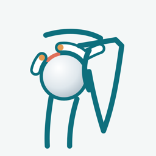

「肩腱板損傷モデル」は、肩の腱板断裂のしくみを3Dで見せながら説明できる、患者説明用のアプリです。
インターネット接続は必要ですか？
不要です。すべての機能がオフラインで動作します。
医療機器ですか？
いいえ。病気のしくみを説明するための教材であり、診断や治療方針の決定を目的としたものではありません。表示される形は単純化した模式図です。
本アプリの3Dデータは、BodyParts3D（© ライフサイエンス統合データベースセンター、CC BY-SA 2.1 JP）を改変して作成しています。改変した3Dデータは GitHub（natchi4182/rotator-cuff-3d-data）で同じライセンス（CC BY-SA 2.1 JP）で公開しています。
ご意見・不具合のご報告は、下記までメールでお送りください。
natchi@symphony.plala.or.jp